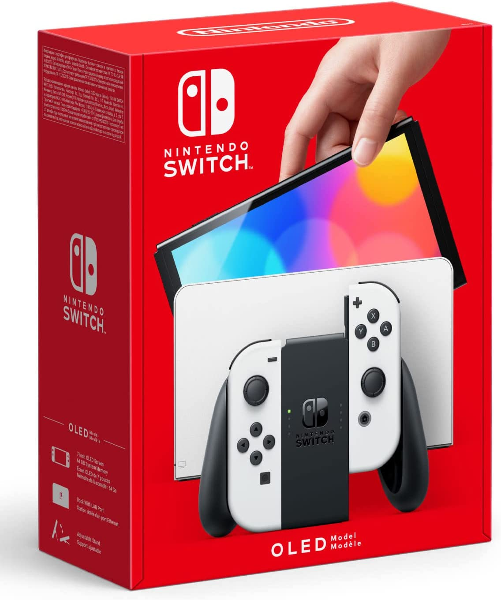

|  View Large Picture |
Nintendo Switch - OLED Model (White/Black Edition)Introducing the newest member of the Nintendo Switch family Play at home on the TV or on-the-go with a vibrant 7-inch OLED screen with the Nintendo Switch™ system - OLED model. In addition to a new screen with vivid colors and sharp contrast, the Nintendo Switch - OLED model includes a wide adjustable stand for more comfortable viewing angles, a dock with a wired LAN port for TV mode (LAN cable sold separately), 64GB of internal storage, and enhanced audio in Handheld and Tabletop modes using the system's speakers. Features
*There may be software where the game experience may differ due to the new capabilities of the system, such as the larger screen size. |
| Description | Price |
|---|---|
| Nintendo Switch™ (OLED Model) with White Joy-Con - OLED Console White/Black Joy-Con Edition | $449.98 |
| Nintendo Switch (OLED Model) with Neon Red & Neon Blue Joy-Con - OLED Console Red & Neon Joy-Con Edition | $499.99 |
| Nintendo Switch with Neon Blue and Neon Red Joy-Con™ | $399.99 |
| Nintendo Switch with Gray Joy-Con | $399.99 |